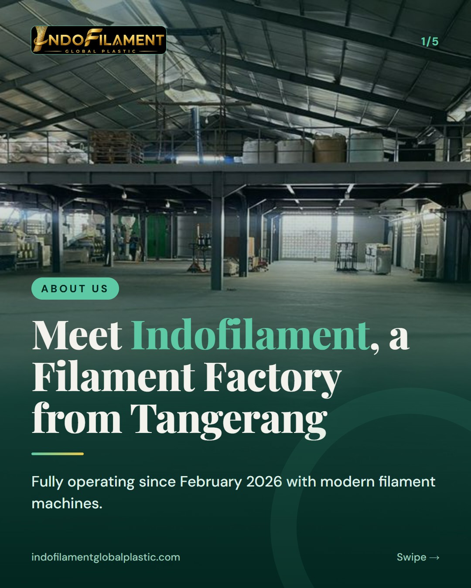
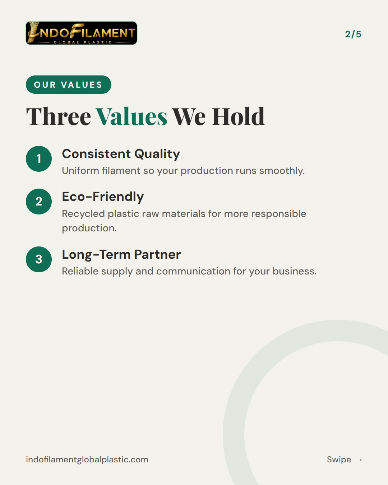
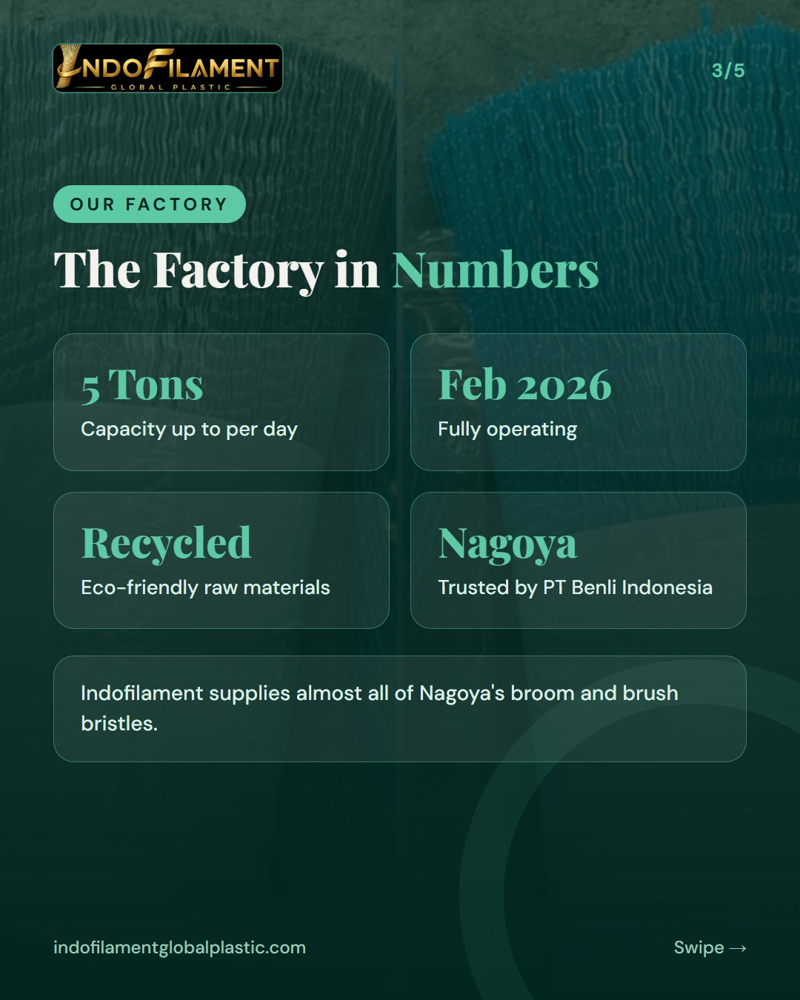
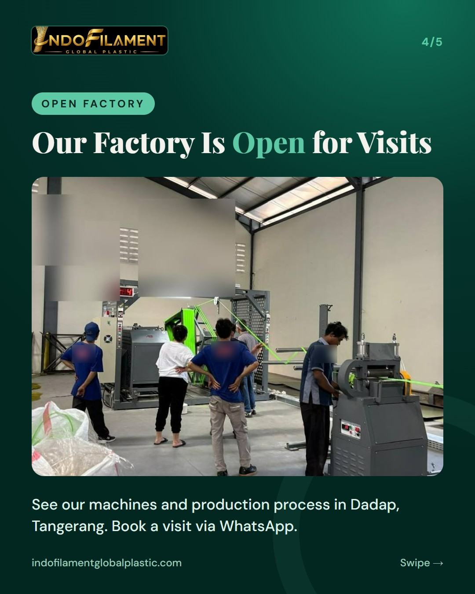
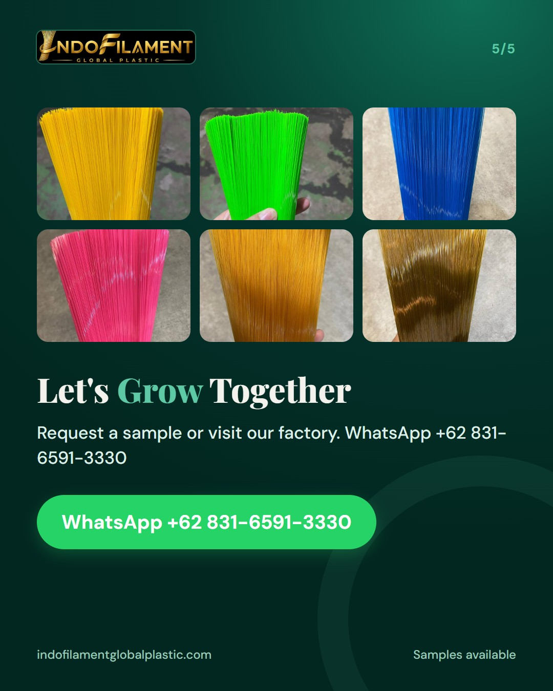

Intro series 2 of 3 - About Us: our factory, our values, and the Nagoya partnership





Who is behind your broom and brush filament? 🏭 This is part two of our introduction series. PT Indofilament Global Plastic is a nylon filament factory in Tangerang that has been fully operating since February 2026. With modern filament machines, our production capacity reaches up to 5 tons per day to serve domestic and export markets. Our raw material is eco-friendly recycled plastic. We are also trusted by the Nagoya brand, owned by PT Benli Indonesia. Since February 2026, we have supplied almost all of Nagoya's broom and brush bristles. For us, consistent quality, eco-friendliness, and being a long-term partner are values we always uphold. Our factory is open for visits. Request a sample via WhatsApp +62 831-6591-3330 or DM us. 📩 #broomfilament #brushfilament #nylonfilament #filamentmanufacturer #madeinindonesia #privatelabel #Tangerang #ecofriendly #recycledmaterials #indofilament